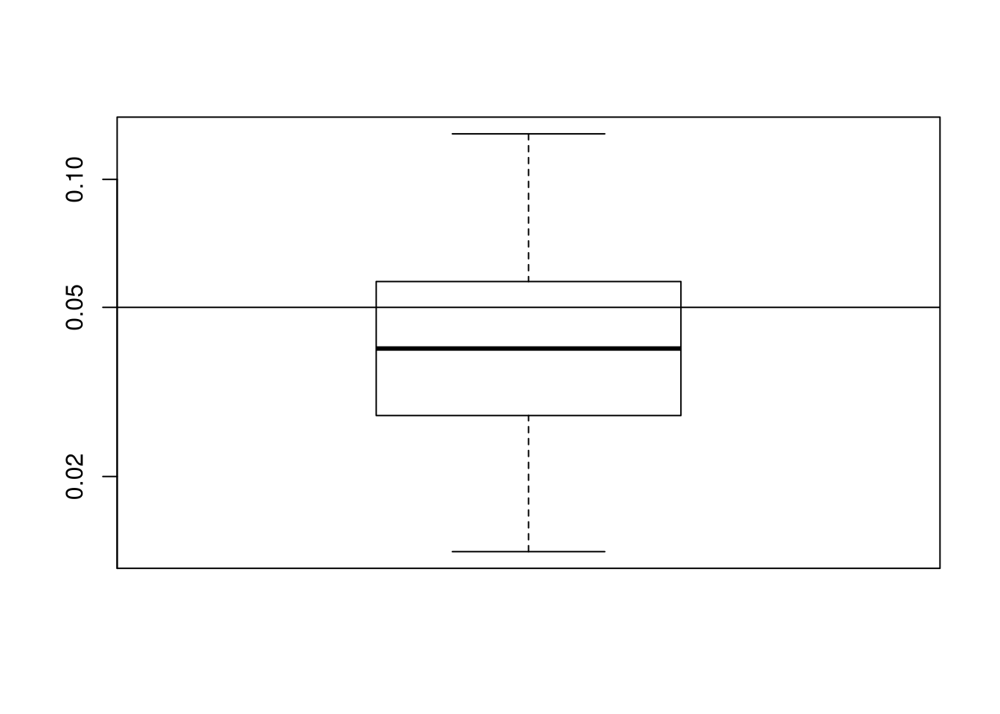
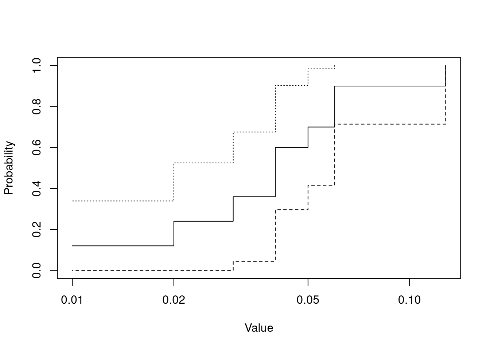
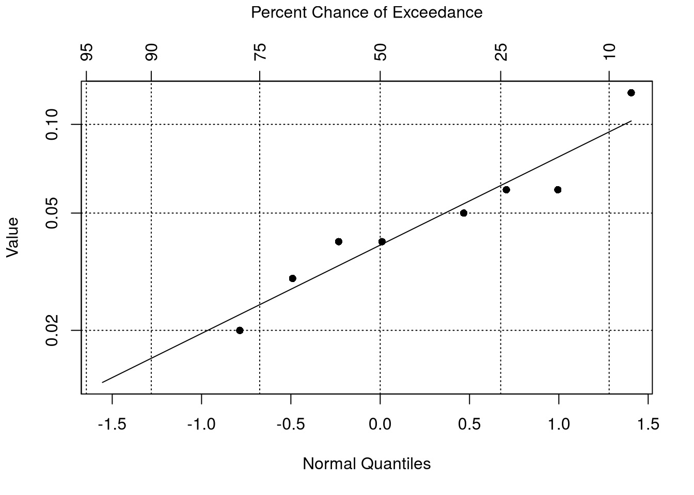
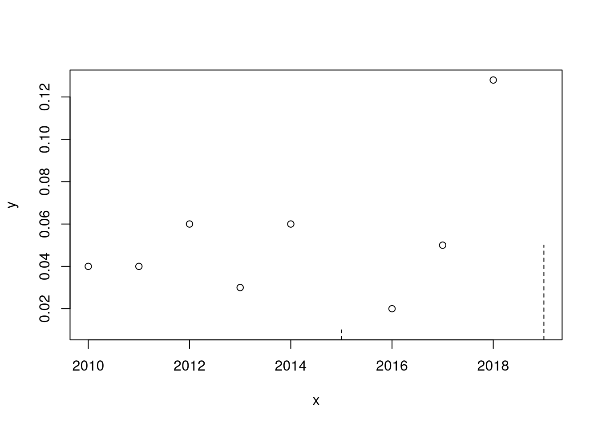
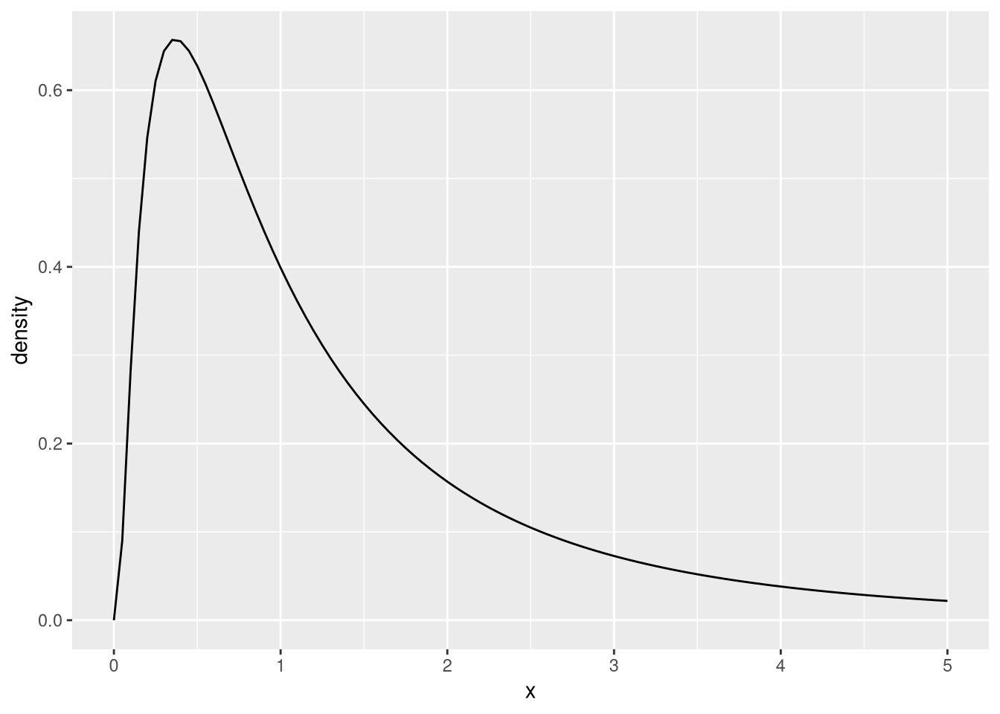

measurement censored
1 1.0 TRUE
2 1.0 TRUE
3 1.0 TRUE
4 3.5 FALSE14 Censored Data
NoteLearning Goals
After this lesson, you should be able to:
- Explain what censoring means for a dataset
- Explain the differences between left-, right-, and interval-censored data
- Explain why substitution is inappropriate for censored data
- Describe several appropriate ways to work with censored data
- Visualize censored data with ECDF and probability plots
- Use the NADA package to compute statistics that account for censored data
ImportantRequired Packages
This chapter uses the following R packages:
- dplyr
- NADA
For a refresher about how to install and load packages, see the Packages section of DataLab’s R Basics workshop reader.
14.1 Kinds of Censored Data
Censored data are a specific kind of missing data where we know the cause of missingness and know the missing data lie within specific ranges (which are smaller than the full range of the population). We can further categorize censored data as:
Left-censored or nondetect data, where we know censored data lie below some upper limit. Left-censored data are often the result of testing instruments (in a laboratory or other setting) that are unable to precisely measure quantities different from 0 below a given detection limit. For example, suppose we test drinking water from several sites for lead contamination; the laboratory may return results where concentrations below 1 microgram (or some other detection limit, depending on their instruments) are listed only as
< 1rather than specific quantities.Mathematically, we can think of right-censored data as missing data known to be in the interval \((-\infty, d)\) or \([0, d)\) for some known detection limit \(d\).
Right-censored or survival data, where we know censored data lie above some lower limit. Right-censored data are commonly the result of time-limited studies that measure the time of some event for each subject; for some subjects, the event might not occur until after the time limit of the study. For instance, in a 1825-day (5-year) study of cancer recurrence, some of the people in the study might remain cancer-free throughout, so their time to recurrence is listed only as
> 1825rather than a specific number of days.Mathematically, we can think of left-censored data as missing data known to be in the interval \((t, \infty)\) for some known end time \(t\).
Interval-censored data, where we know censored data lie in specific intervals, but the intervals are not the right or left tail of the population range. Interval-censored data are not as common as right- or left-censored data, but can be dealt with using some of the same methods.
Mathematically, we can think of interval-censored data as missing data known to be in the interval \((a, b)\) for some known endpoints \(a\) and \(b\).
Sometimes a study might have multiple detection limits or time limits. For example, a laboratory might use several testing instruments with different detection limits. As another example, in a time-limited medical study, some of the subjects might decide to drop out of the study early, so their times to event are censored at lower time limits.
Occasionally, a study might produce a combination of right-, left-, and/or interval-censored data. For instance, a laboratory might report right-censored data if their instruments are imprecise above some upper reporting limit (in addition to left-censored data below a lower detection limit).
NoteNote: Quantification Limits
Some laboratories report two lower limits for the same instrument:
- A detection limit for the smallest measurement distinguishable from 0;
- A quantification limit for the smallest measurement accurate enough to report as a single number.
In this case, data below the detection limit are called nondetects and are left-censored. Data between the detection limit and the quantification limit are interval-censored.
See the “Reporting Limits” chapter of Helsel (2012) for more details.
This chapter and its examples emphasize left-censored data because they’re the most common kind of censored data in environmental datasets. Along the way, the chapter points out connections to left- and interval-censored data.
14.2 Working with Censored Data
Statistical research about censored data has largely focused on right-censored data because there are numerous applications in medicine, insurance, and manufacturing. Within statistics, methods for right-censored data are known as survival analysis methods.
Fortunately, many methods for right-censored data generalize well to left-censored data with small changes. There are also a few methods that work well for all kinds of censored data (left-, right-, and interval-censored).
The main problem we face with censored data is the same as for any missing data: most standard statistical methods take complete data for granted. With censored data, we have the benefit of partial information, which we can and should use to improve the quality of estimates and other results compared to the ordinary missing data case. Rather than complete-case analysis or multiple imputation, we’ll generally use methods that take advantage of the partial information in censored data.
Warning
Censored data are MNAR (Section 13.1) by definition, so complete-case analysis is never appropriate when data are censored.
14.2.1 Substitution
It might seem tempting to replace censored data with some point in the interval, such as an endpoint or the midpoint. Helsel (2012) calls this substitution and is emphatic that this approach is flawed. There are several problems with substitution:
- Like most single imputation methods (Section 13.5), substitution:
- Artificially lowers the variance of the dataset, so estimates of standard deviation and standard error tend to be too low;
- Introduces spurious patterns, which can obscure real patterns and bias estimates.
- The “best” point to choose, in the sense of yielding results most faithful to the population, is not well-defined. Furthermore, it differs for each dataset and each statistical method. In general, it’s impossible to determine the “best” point unless we can uncensor the data or already know the distributional properties of the population (which are what we’re trying to infer!). Rules of thumb, such as using half the detection limit for left-censored data, have no statistical foundation.
Warning
Substitution is never appropriate for censored data and generally leads to incorrect results.
See Helsel (2012) for multiple examples using simulation studies and artificial censoring of real datasets, as well as a thorough review of other literature on this topic.
14.2.2 Better Strategies
There are three broad strategies that have been demonstrated to work well for analyzing left-censored data:
Statistical methods which use binary features or ranks:
We can transform a censored feature into a complete binary below/above detection limit feature. Then we can use standard statistical methods for binary data, such as proportion tests and generalized linear models.
We can transform a censored feature into ranks by assigning each censored observation an arbitrary rank from those below the detection limit, or by treating censored observations as tied in rank just below the detection limit. So for a dataset with
< 1, < 1, < 1, 3.5, we assign ranks1, 2, 3, 4(the former case) or2, 2, 2, 4(the latter case; for ties, the rank is the mean of their ranks if they were not tied).
Many non-parametric methods—those which avoid assuming that data come from a specific distribution—can be thought of as standard statistical methods applied to binary features or ranks. As a consequence, non-parametric methods are useful for censored data.
Maximum likelihood estimation (MLE): MLE is parametric, meaning we assume that data come from a specific distribution, such as the normal distribution (Section 7.6). Because of this assumption, we can use two functions to help us estimate:
- The density function \(p(x)\) characterizes the probability of data at or around a given point \(x\); it’s what density plots (Section 3.2) estimate.
- The cumulative distribution function (CDF) \(F(x)\) returns the probability of data less than or equal to a given point \(x\). It can also be defined as the area under the density function \(p(x)\) up to the point \(x\).
The likelihood of an observed point \(x\) is just \(p(x)\). For left-censored data with detection limit \(d\), we instead use \(F(d)\), the probability of being below the detection limit. Similarly, for right-censored data with time limit \(t\), we instead use \(1 - F(t)\), the probability of being above the time limit. Likelihood can also be extended to interval-censored data.
We can compute the likelihood \(L\) of an entire dataset as the product of the likelhood of each observation
\[ L = \prod p(x_i) \prod F(x_j) \prod 1 - F(x_k) \]
In MLE, we estimate parameters for the assumed distribution (such as the mean and standard deviation for a normal distribution) by choosing estimates that maximize the likelihood \(L\) of the dataset. The intuition is that we choose the parameters that make the dataset most likely. We can also use MLE to estimate other statistics related to the distribution, such as linear model coefficients.
Survival analysis methods, which are designed for right-censored data. There’s a simple way to transform left-censored data into right-censored data: choose a constant \(C\) larger than the largest observed data, then compute “flipped” observations \(C - x_i\). Flipping reverses the ranks of the data but preserves the distances between data. After applying a survival analysis method, we can flip the estimates back to the original scale (without introducing bias or other inaccuracies).
For example, we can flip the dataset
< 1, < 1, < 1, 3.5by choosing \(C = 5\) (or any other value larger than 3.5). Then the flipped dataset is> 4, > 4, > 4, 1.5. Notice that in the flipped dataset, the ranks of the data are reversed, but the distances between data are the same.Two methods from survival analysis are especially useful:
In survival analysis, the function \(S(x) = 1 - F(x)\), which returns the probability of data greater than a given point \(x\), is called the survival function. The Kaplan-Meier estimator is a non-parametric estimator of the survival function for right-censored data. We can use the Kaplan-Meier estimate to compute descriptive statistics and their standard errors.
A probability plot or quantile-quantile plot (Section 9.3) is a plot of the quantiles of a theoretical distribution (such as a normal distribution) against the quantiles of a dataset. Missing data, including censored data, are not plotted. However, we can impute missing data with predictions from a linear model fitted on the observed data; the theoretical quantiles are the predictors and the dataset quantiles are the outcome. We can then use the observed and imputed data to compute summary statistics. This method is called robust regression on order statistics (ROS) and is semi-parametric: it assumes a distribution only for the censored data.
There are tradeoffs to these strategies. Some specific limitations are:
Binary feature and rank-based non-parametric methods only allow one detection limit. One way to work around this is by re-censoring all censored data at the highest detection limit, but this wastes potentially useful information.
MLE performs poorly if the assumed distribution is incorrect. It’s also known to perform poorly for left-censored datasets with less than about 50 observations.
Kaplan-Meier can’t be used to estimate quantiles below the proportion of censored data. So for a dataset with 50% censored data or more, Kaplan-Meier can’t be used to estimate the median.
Based on these limitations and a review of more than 15 papers comparing strategies, Helsel (2012) suggests the following, broken down by proportion of censored data:
- For less than 50% censored data: use Kaplan-Meier, robust ROS, or multiple imputation. See Lubin et al. (2004) for an example of how to perform multiple imputation for left-censored data.
- For 50-80% censored data:
- For less than 50 observations: use robust ROS or multiple imputation.
- For 50 observations or more: use MLE or multiple imputation.
- For 80% censored data or more: use non-parametric methods for binary features. There are not enough data to estimate most statistics accurately.
14.3 Censored Data in R
Support for censored data in R is provided through packages. Before considering those, there are two formats we can use to represent censored data in a data frame. Each uses two columns. They are:
A measurement column and a censorship indicator column. The value in the measurement column is set to the detection limit for all censored data. For the dataset
< 1, < 1, < 1, 3.5, the data frame in this format is:This is the preferred format of the NADA package (described below) and what we’ll use in the examples.
A lower endpoint column and an upper endpoint column. For observed data, the value in both columns is the observed measurement. For the dataset
< 1, < 1, < 1, 3.5, the data frame in this format is:lower upper 1 0.0 1.0 2 0.0 1.0 3 0.0 1.0 4 3.5 3.5This format is more flexible than the first format, because it can accommodate left-, right-, and interval-censored data.
The survival package is the most popular package for working with right-censored data in R. However, there are also many other packages for right-censored data and survival analysis.
The NADA package is the primary (and perhaps only) package for working with left-censored data in R; it was developed to accompany the Helsel (2012) book. A different developer is working with Helsel on a revised and updated version in the NADA2 package. We’ll use the NADA package in examples, because as of writing, the NADA2 package seems unstable and incomplete. In the future, the NADA2 package may be a better choice for bug fixes and access to new methods, as well as future-proofing code.
The interval package package is the primary package for working with interval-censored data. A few other survival analysis packages also support interval-censored data.
NoteSee Also
The CRAN Task View: Survival Analysis page is a curated list of R’s most widely-used packages related to censored data. Most of the packages are for right-censored data, but there are a few that support left- or interval-censored data.
The CRAN Task View: Epidemiology page is a curated list of R’s most widely-used packages for epidemiology; the Environmental Epidemiology section may be of interest to people working with (censored) environmental data.
14.4 Dataset: CA SWP Nutrients
The California State Water Project (SWP) is a network of aqueducts and pumping stations that bring water from Northern California to drier parts of the state, such as Southern California. The project is managed by the California Department of Water Resources (DWR).
DWR collects data about concentrations of nutrients in the water in the SWP at sites throughout the network. These nutrients—which are predominantly nitrogen or phosphorus compounds—are neccessary in specific ratios for plant growth, including algae in the SWP. Algae is a costly nuisance for the SWP, because can obstruct the flow of water.
Important
Click here to download the 2010-2019 California SWP nutrients dataset.
If you haven’t already, we recommend you create a directory for this workshop. In your workshop directory, create a data/ subdirectory. Download and save the dataset in the data/ subdirectory.
NoteDocumentation for 2010-2019 California SWP Nutrients Dataset
Each row in the dataset contains measurements from one (year-month, site) combination.
| Column | Description |
|---|---|
year |
Year observation was collected |
month |
Month observation was collected |
station |
Short station name |
result_nitrogen |
Total Kjeldahl nitrogen (mg / L) |
censor_nitrogen |
Censorship indicator |
result_phosphorus |
Total phosphorus (mg / L) |
censor_phosphorus |
Censorship indicator |
result_ammonia |
Dissolved ammonia (mg / L) |
censor_ammonia |
Censorship indicator |
result_nitrate |
Dissolved nitrate (mg / L) |
censor_nitrate |
Censorship indicator |
result_orthophosphate |
Dissolved ortho-phosphate (mg / L) |
censor_orthophosphate |
Censorship indicator |
date |
Date observation was collected (for convenience; the day is not the actual collection day) |
swp_milepost |
Distance from the head of the SWP (miles) |
The source dataset was kindly provided by Ted Swift of the DWR. The version linked above is a subset, which we cleaned and aggregated to the month level to make the examples in this section easier to follow.
The structure of the dataset is:
nutri = readRDS("data/2010-2019_ca_swp_nutrients.rds")
str(nutri)Classes 'tbl_df', 'tbl' and 'data.frame': 1148 obs. of 15 variables:
$ year : num 2010 2010 2010 2010 2010 2010 2010 2010 2010 2010 ...
$ month : num 1 1 1 1 1 1 1 1 1 1 ...
$ station : chr "CHECK13" "CLIFTON" "Check21" "Check29" ...
$ result_nitrogen : num 0.5 0.4 0.4 0.2 0.1 0.5 0.6 0.5 0.4 0.4 ...
$ censor_nitrogen : logi FALSE FALSE FALSE FALSE FALSE FALSE ...
$ result_phosphorus : num 0.09 0.09 0.09 0.04 0.02 0.04 0.1 0.09 0.02 0.1 ...
$ censor_phosphorus : logi FALSE FALSE FALSE FALSE FALSE FALSE ...
$ result_ammonia : num 0.05 0.06 0.04 0.03 0.01 0.02 0.09 0.07 0.01 0.01 ...
$ censor_ammonia : logi FALSE FALSE FALSE FALSE TRUE FALSE ...
$ result_nitrate : num 4.6 3.7 3.7 5.5 8.9 NA 3.9 4.3 NA NA ...
$ censor_nitrate : logi FALSE FALSE FALSE FALSE FALSE NA ...
$ result_orthophosphate: num 0.05 0.03 0.05 NA 0.01 0.01 0.03 0.05 0.01 0.03 ...
$ censor_orthophosphate: logi FALSE FALSE FALSE NA FALSE TRUE ...
$ date : Date, format: "2010-01-01" "2010-01-01" ...
$ swp_milepost : num 70.9 0 172.4 244.5 303.4 ...In the examples, we’ll focus on the Banks Pumping Plant at the head of the SWP:
library("dplyr")
banks = filter(nutri, station == "H.O.BanksHeadworks")
nrow(banks)[1] 120We’ll mostly examine ammonia measurements from November of each of the 10 years in the dataset:
banks_nov = filter(banks, month == 11)
select(banks_nov, year, result_ammonia, censor_ammonia)# A tibble: 10 × 3
year result_ammonia censor_ammonia
<dbl> <dbl> <lgl>
1 2010 0.04 FALSE
2 2011 0.04 FALSE
3 2012 0.06 FALSE
4 2013 0.03 FALSE
5 2014 0.06 FALSE
6 2015 0.01 TRUE
7 2016 0.02 FALSE
8 2017 0.05 FALSE
9 2018 0.128 FALSE
10 2019 0.05 TRUE There are 2 left-censored measurements for ammonia in this subset.
14.5 Visualizing Censored Data
Visualizations for missing data (Section 13.4) are a great way to explore censored data. There are also a few special visualizations we can make for censored data.
First, we can display the distribution of censored data with box plots (Section 4.2) because box plots only depend on the quantiles. We can’t compute exact estimates for quantiles that lie below the detection limit, so we can either hide/blank that part of the plot, or we can use a model, such as robust ROS, to impute the censored data.
The NADA package’s cenboxplot function takes the imputation approach. The function requires two arguments: a measurements column and a censorship column. So we can make a box plot for the November ammonia measurements at the Banks Pumping Plant with the code:
library("NADA")
with(banks_nov, cenboxplot(result_ammonia, censor_ammonia))
The horizontal line in Figure 14.1 shows the highest detection limit. Below the detection limit, the box plot is based on a combination of observed data and imputed data.
Another way to visualize the distribution of censored data is by plotting the empirical cumulative distribution function (which estimates the CDF \(F(x)\) described in Section 14.2.2). For censored data, Kaplan-Meier is the standard method to compute the ECDF (by first estimating the survival function \(S(x)\)).
The NADA package’s cenfit function uses the Kaplan-Meier method to compute the ECDF. We can plot the resulting object with R’s built-in plot function to view a plot of the ECDF:
fit_km = with(banks_nov, cenfit(result_ammonia, censor_ammonia))
plot(fit_km)
In Figure 14.2, the x-axis shows ammonia concentration and the y-axis shows probability. The solid line is the ECDF; at each position on the x-axis, it shows the probablity of measuring a smaller concentration of ammonia. The dashed lines are a 95% confidence interval for the ECDF.
Before using a parametric method, it’s a good idea to check that the distribution of the data is similar to the assumed distribution. One way to do this is with a probability plot (or QQ plot).
We can also use a probability plot to impute censored data; this is the robust ROS method described in Section 14.2.2. The idea is to fit a line to the observed data in the probability plot, then use the model to predict values for the censored data.
The NADA package’s cenros function fits a robust ROS model. We can also use its output with the plot function to make a probability plot that shows the fitted line:
fit_ros = with(banks_nov, cenros(result_ammonia, censor_ammonia))
plot(fit_ros)
Figure 14.3 compares the ammonia concentrations to a normal distribution, but we can also compare to other distributions by setting the dist parameter in cenros. Be careful when interpreting the plot—unlike a typical QQ plot, the line is the robust ROS line, not the \(y = x\) line that indicates an exact match between the distributions.
Finally, we can make modified scatter plots that show censored data as lines or intervals rather than points. This is an alternative for censored data to the missing data scatter plot presented in Section 13.4.
The NADA package’s cenxyplot function makes a modified scatter plot. As of writing, it appears to only support displaying censored data on the y-axis, despite parameters that suggest it supports censored data on both axes. Let’s make a scatter plot of year versus ammonia concentration:
with(banks_nov,
cenxyplot(
year, FALSE, # x-axis (measurement, censored)
result_ammonia, censor_ammonia, # y-axis (measurement, censored)
)
)
The dashed lines in Figure 14.4 represent the ranges of the two left-censored measurements among the ammonia concentrations.
14.6 Statistics with Censored Data
The NADA package provides several functions to fit models and compute summary statistics for censored data. We already saw two, cenfit (for Kaplan-Meier) and cenros (for robust ROS), in Section 14.5. For the fitted models from these functions, we can use R’s built-in point statistics functions mean, sd, median, and quantile to access estimates.
For example, these are the estimates for the mean and standard deviation of ammonia concentration based on the Kaplan-Meier method:
mean(fit_km) mean se 0.95LCL 0.95UCL
0.04780000 0.01026038 0.02769002 0.06790998 sd(fit_km)[1] 0.03244618Similarly, these are the estimates based on robust ROS:
mean(fit_ros)[1] 0.04684262sd(fit_ros)[1] 0.03258156We can use the NADA package’s cenmle function to fit a model with MLE. As with the other two functions, we can get point statistics from the resulting object:
fit_mle = with(banks_nov, cenmle(result_ammonia, censor_ammonia))
mean(fit_mle) mean se 0.95LCL 0.95UCL
0.04810791 0.01328593 0.02850656 0.08118731 sd(fit_mle)[1] 0.04201381
TipTip: The Lognormal Distribution
By default, the cenmle function (and also the cenreg function) assume the data follow a lognormal distribution. Exponentiating data that follow a normal distribution yields data that follow a lognormal distribution; conversely, taking the natural logarithm of data that follow a lognormal distribution yields data that follow a normal distribution.

Lognormal distributions span \((0, \infty)\) and are right-skewed. This makes them useful for modeling certain kinds of environmental data, such as concentrations of chemicals (where the measurements cannot be negative and may occasionally be very large).
We can select other distributions for cenmle by setting the dist parameter.
It’s useful to compare results from several methods in order to assess how robust the results are (or in some cases, how robust the methods are). The NADA package’s censtats function is a convenient way to get the results from all three of the Kaplan-Meier, robust ROS, and MLE methods:
with(banks_nov, censtats(result_ammonia, censor_ammonia)) n n.cen pct.cen
10 2 20 median mean sd
K-M 0.04000000 0.04780000 0.03244618
ROS 0.04000000 0.04684262 0.03258156
MLE 0.03623496 0.04810791 0.04201381Let’s compare the means from these methods to the mean from an available-case analysis (which is inappropriate for censored data):
with(banks_nov, mean(result_ammonia[!censor_ammonia]))[1] 0.0535The mean from available-case analysis is substantially higher than the means from the models. It overestimates the population mean, because it doesn’t take the potentially small values of the censored data into account.
Correlation is a useful statistic for investigating relationships between features (Section 5.2). For censored data, we can use a non-parametric correlation statistic known as Kendall’s \(\tau\) (tau). Kendall’s \(\tau\) uses the ranks of the measurements rather than the values.
We can compute Kendall’s \(\tau\) with R’s built in cor function. Make sure to set method = "kendall". Let’s compute the correlation between the ammonia and nitrogen concentrations in the dataset (we do not need to pass the censor_ columns as arguments because the statistic only uses ranks):
with(banks_nov, cor(result_ammonia, result_nitrogen, method = "kendall"))[1] 0.1636634In this case, there’s mild correlation between the two nutrients.
14.6.1 Tests and Linear Models
The NADA package also provides a few functions for conducting hypothesis tests and fitting more complex models. For instance, we can use the cenreg function to fit a linear model via MLE. Let’s try fitting a linear model to compare ammonia concentrations at the Banks Pumping Plant in October and November:
banks_oct_nov = filter(banks, month %in% 10:11)
fit_mle_reg = with(banks_oct_nov,
cenreg(Cen(result_ammonia, censor_ammonia) ~ factor(month))
)
summary(fit_mle_reg) Value Std. Error z p
(Intercept) -3.157 0.211 -14.934 1.99e-50
factor(month)11 -0.146 0.300 -0.487 6.26e-01
Log(scale) -0.425 0.174 -2.446 1.44e-02
Scale = 0.654
Log Normal distribution
Loglik(model)= 33.1 Loglik(intercept only)= 33
Loglik-r: 0.1084532
Chisq= 0.24 on 1 degrees of freedom, p= 0.63
Number of Newton-Raphson Iterations: 3
n = 20 As with cenmle (and unlike lm), the cenreg function defaults to a lognormal distribution.
NoteSee Also
Statistics for Censored Environmental Data Using Minitab and R (Helsel 2012) is perhaps the only textbook that focuses entirely on statistical methods for left-censored data. It’s an excellent and thorough introduction to the subject, provides lots of practical advice, and cites many other sources from which to learn more. It was the primary reference for this chapter.
There are many textbooks that focus on right-censored data and survival analysis. Survival Analysis: A Self-Learning Text (Kleinbaum and Klein 2012) is a good introduction to the subject.